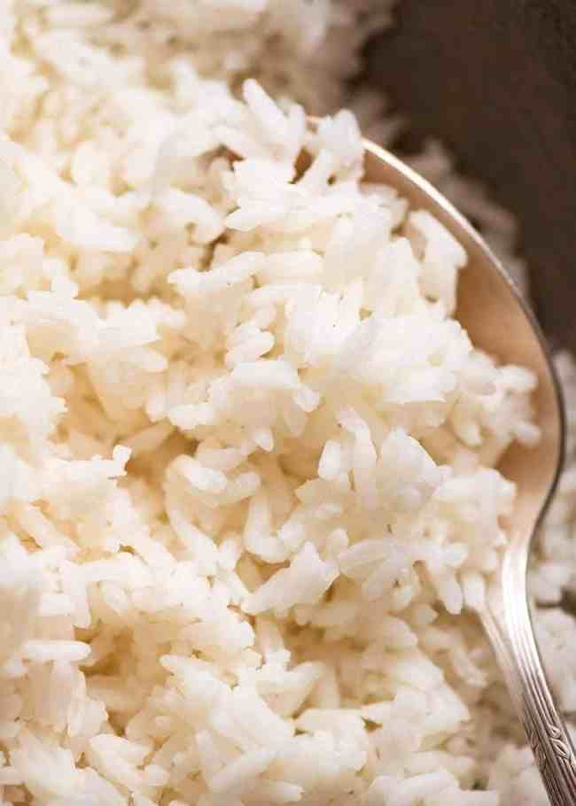

Quick and Easy rice for the novice cook!

You can use:
- long grain white rice
- medium grain white rice
- short grain white rice except sushi rice
Do NOT use:
- sushi rice – use the directions in this recipe
- wild rice, black rice, or other special rices
- risotto rice
- paella rice
- quinoa
Steps:
- Place 1 cup of rice (no rinsing!) and 1.5 cups water in a saucepan and bring to a boil over medium high – no lid
- Turn heat down to low, cover with lid, and leave for 13 minutes
- With lid still on, remove saucepan from stove and stand for 10 minutes
- Fluff with a rice paddle, rubber spatula or fork, marvel at perfect fluffy rice!